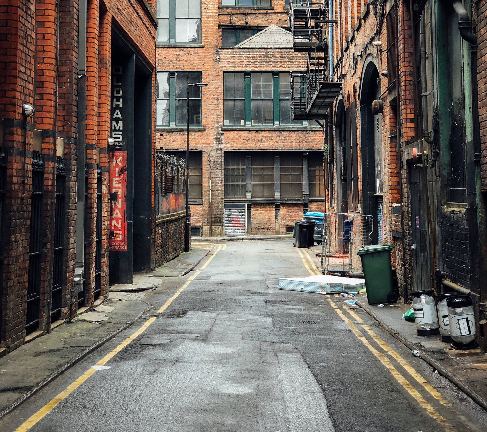

After all of your troubles, you end up in an seemingly empty alleyway. You don't see anyone, but you do hear rustling echoing down the alley. You are still looking for food because the grind never stops. Thankfully, there are two different kinds of trash with your name on it. Do you go for the large trash bin or the pile of trash bags?